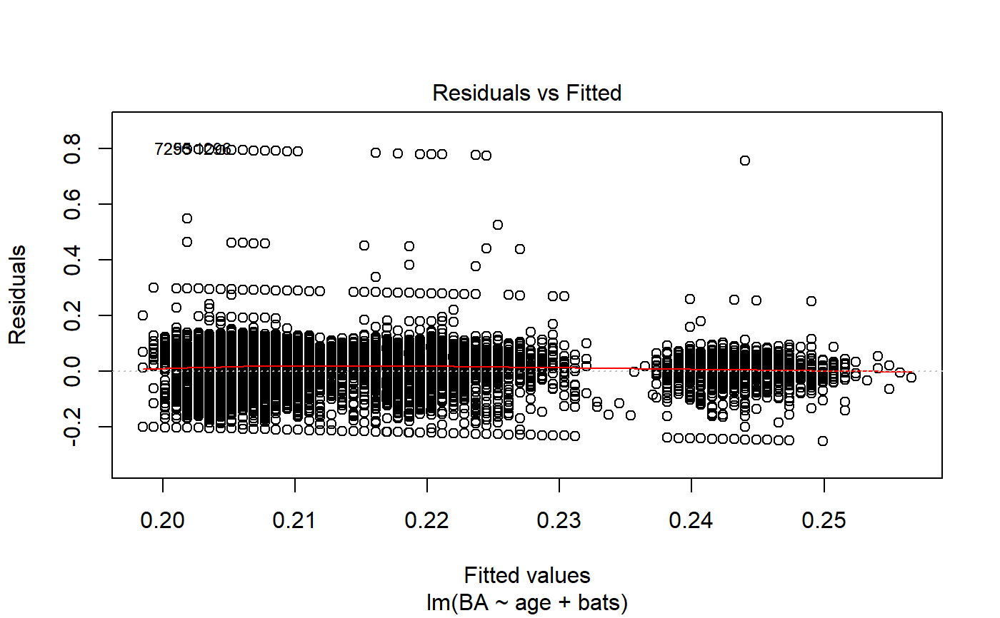
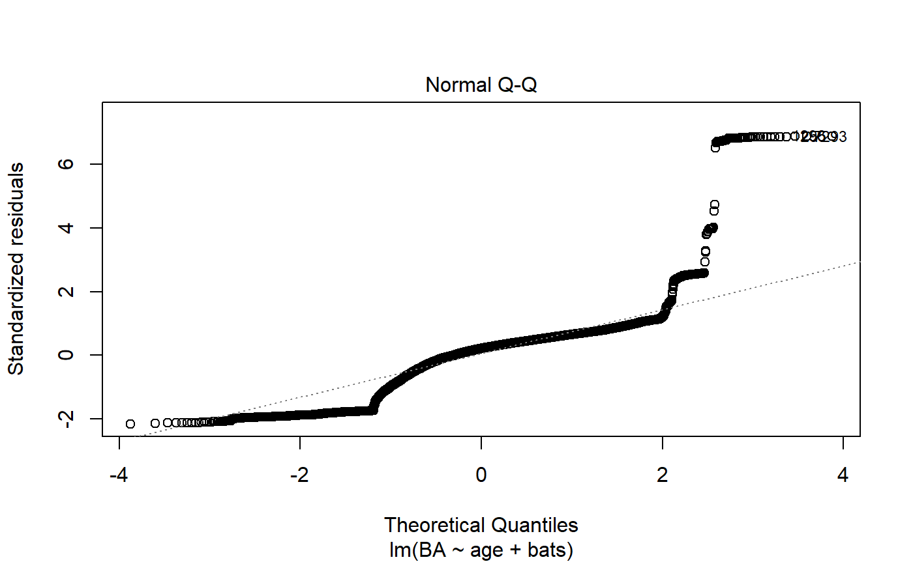
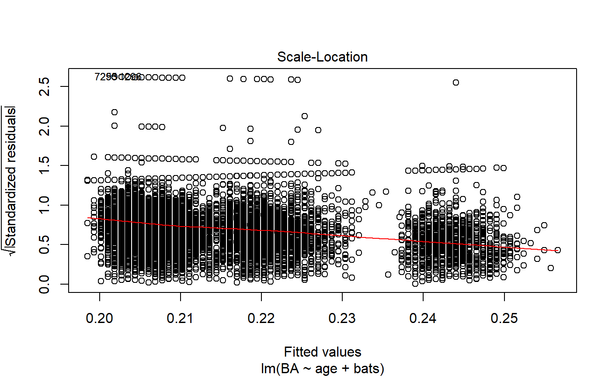
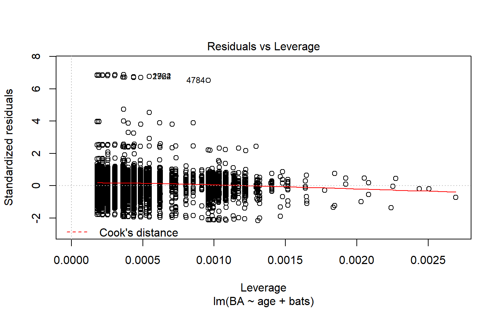

batting.RdThe batting dataset contains MLB player, salary, and hitting statistics from Sean Lahman's Baseball Database.
batting
A data frame with 9395 observations on 36 variables. The variables are as follows:
Unique identifier for each player
Year data was observed
Team; a factor
Player's stint (order of appearances within season)
League; a factor with levels AA AL FL NL PL UA
Games: number of games in which a player played
At Bats
Runs
Hits: times reached base because of a batted, fair ball wihtout error by the defense
Doubles: hits on which the batter reached second base safely
Triples: hits on which the batter reached third base safely
Homeruns
Runs Batted In
Stolen Bases
Caught Stealing
Base on Balls
Strikeouts
Intentional Walks
Hit by Pitch
Sacrifice Hits
Sacrifice Flies
Grounded into Double Plays
Batting Average
Plate Appearances
Total Bases
Slugging Percentage
On-Base Percentage
On-Base Percentage + Slugging
Batting Average on Balls in Play
Annual Salary
Year a player was born
Month a player was born
Player's last name
Player's first name
Player's batting hand
Player's age
Lahman, S. (2010) Lahman's Baseball Database, 1871-2012, 2012 version, http://baseball1.com/statistics/
This dataset combines Lahman's Master, Batting, and Salaries datasets to provide comprehensive batting statistics for each Major League Baseball player. Because this data is intended for demonstrating multiple regression, the dataset was reduced to a 15 year time frame (2001-2016) and simplified by removing all incomplete cases.
regression <- lm(BA ~ age + bats, data = batting) summary(regression)#> #> Call: #> lm(formula = BA ~ age + bats, data = batting) #> #> Residuals: #> Min 1Q Median 3Q Max #> -0.24990 -0.04737 0.02464 0.06030 0.79815 #> #> Coefficients: #> Estimate Std. Error t value Pr(>|t|) #> (Intercept) 0.2188921 0.0091773 23.851 < 2e-16 *** #> age 0.0008380 0.0002868 2.922 0.00349 ** #> batsL -0.0228980 0.0042068 -5.443 5.37e-08 *** #> batsR -0.0371538 0.0039075 -9.508 < 2e-16 *** #> --- #> Signif. codes: 0 '***' 0.001 '**' 0.01 '*' 0.05 '.' 0.1 ' ' 1 #> #> Residual standard error: 0.1159 on 9391 degrees of freedom #> Multiple R-squared: 0.01146, Adjusted R-squared: 0.01115 #> F-statistic: 36.3 on 3 and 9391 DF, p-value: < 2.2e-16 #>plot(regression)